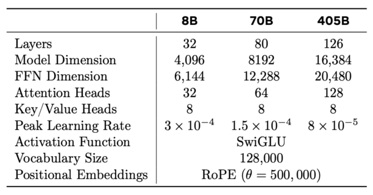
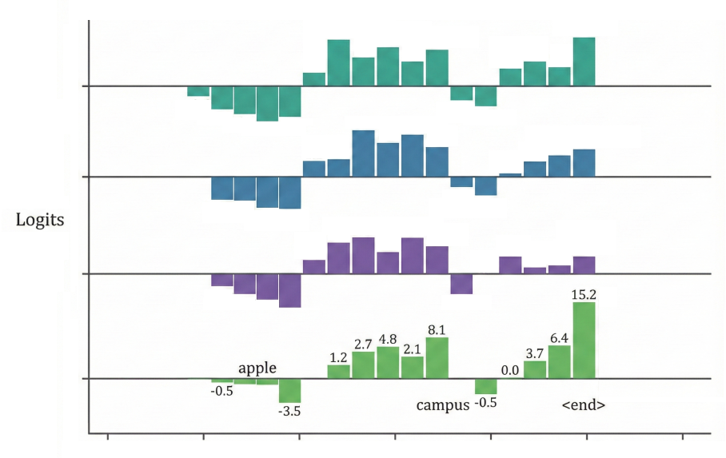
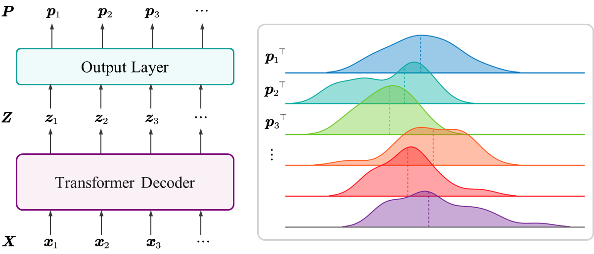

Transformer 仅仅将“注意力模块”简单堆叠是无法构建深度神经网络的。要构建一个能够训练成百上千层、具有强大表征能力的深度模型（如 GPT-3, LLaMA 等），我们需要解决一些问题。
注意力模块的局限性 如果我们将深度学习模型看作一个信息处理的流水线，多头注意力机制（MHA）仅仅完成了“ 信息的聚合与路由（Routing） ”功能。即，它决定了当前时刻的 token 应该关注上下文中的哪些部分，并将这些部分的信息加权求和。
训练不稳定 ：随着层数加深，梯度在反向传播过程中容易发生消失或爆炸，导致模型难以收敛。
内部协变量偏移（Internal Covariate Shift） ：每一层的参数更新都会改变输出分布，导致下一层需要不断适应新的分布，降低了训练效率。
缺乏非线性变换能力 ：标准的注意力操作主要是线性投影和 Softmax 加权求和。虽然 Softmax 引入了非线性，但其本质更偏向于“选择”而非“特征提取与变换”。 为了解决这些问题，Transformer 层引入了类似 ResNet 的 残差结构 和 层归一化 ，并加入了 MLP（即 FFN） 来增强非线性表征能力。
为了解决这些问题，研究人员为“注意力模块”引入了以下三个关键组件：
残差连接（Residual Connection）： 对应图中的 Add 操作，表示逐元素相加。它可以缓解深度网络中的梯度消失问题，让信息能够无损地流向深层。 层归一化（Layer Normalization, LayerNorm）： 对应图中的 Norm 操作。用于稳定数值分布，加速训练收敛。 前馈神经网络/多层感知机（MLP / Feed-Forward Net）： 在注意力机制之后，通过全连接层对特征进行进一步的非线性变换，增强模型的拟合能力。 基于这些“组件”，我们可以搭建一个
组件 在深度神经网络中，直接堆叠层数往往会导致“退化问题”（Degradation Problem）：随着网络加深，训练误差反而上升。这主要是因为深层网络难以训练，梯度信号在反向传播时逐渐衰减。
因此，Transformer
假设某个子层的输入为向量 x \boldsymbol{x} x ，该子层的运算为 F ( x ) F(\boldsymbol{x}) F ( x ) ，则带有残差连接的输出 y \boldsymbol{y} y 定义为： y = x + F ( x ) \boldsymbol{y} = \boldsymbol{x} + F(\boldsymbol{x}) y = x + F ( x ) 有效的原因 ：从直觉上来说，残差连接 (Residual Connection) 允许信息“无损”地流过网络。模型不再需要学习完整的映射 H ( x ) H(\boldsymbol{x}) H ( x ) ，而只需要学习残差 F ( x ) = H ( x ) − x F(\boldsymbol{x}) = H(\boldsymbol{x}) - \boldsymbol{x} F ( x ) = H ( x ) − x 。如果某一层是冗余的，模型只需将 F ( x ) F(\boldsymbol{x}) F ( x ) 的权重置零，即可退化为恒等映射，这比学习恒等映射本身要容易得多。 在梯度方面，考虑损失函数 L \mathcal{L} L 对输入 x \boldsymbol{x} x 的梯度。根据链式法则： ∂ L ∂ x = ∂ L ∂ y ⋅ ∂ y ∂ x = ∂ L ∂ y ⋅ ( I + ∂ F ( x ) ∂ x ) = ∂ L ∂ y + ∂ L ∂ y ⋅ ∂ F ( x ) ∂ x \begin{aligned}
\frac{\partial \mathcal{L}}{\partial \boldsymbol{x}} &= \frac{\partial \mathcal{L}}{\partial \boldsymbol{y}} \cdot \frac{\partial \boldsymbol{y}}{\partial \boldsymbol{x}} \\
&= \frac{\partial \mathcal{L}}{\partial \boldsymbol{y}} \cdot (I + \frac{\partial F(\boldsymbol{x})}{\partial \boldsymbol{x}}) \\
&= \frac{\partial \mathcal{L}}{\partial \boldsymbol{y}} + \frac{\partial \mathcal{L}}{\partial \boldsymbol{y}} \cdot \frac{\partial F(\boldsymbol{x})}{\partial \boldsymbol{x}}
\end{aligned} ∂ x ∂ L = ∂ y ∂ L ⋅ ∂ x ∂ y = ∂ y ∂ L ⋅ ( I + ∂ x ∂ F ( x ) ) = ∂ y ∂ L + ∂ y ∂ L ⋅ ∂ x ∂ F ( x ) 其中 I I I 是单位矩阵。可以看到，梯度包含项 ∂ L ∂ y \frac{\partial \mathcal{L}}{\partial \boldsymbol{y}} ∂ y ∂ L ，这意味着梯度可以直接通过“跳跃连接”回传到前一层，而不会经过 F ( x ) F(\boldsymbol{x}) F ( x ) 的复杂变换导致衰减。这构成了深度 组件 Norm ) 在计算机视觉（CV）中， 批归一化（Batch Normalization, BN） 是标准操作。BN
但在
因此，我们更关注单个样本（Token）内部特征的分布。这就是 层归一化（Layer Normalization） 的思想。
1️⃣ LayerNorm 考虑输入矩阵 X \boldsymbol{X} X 中的一行，即一个样本（例如一个单词的词向量/Token），记为 x ⊤ = [ x 1 , … , x d ] ∈ R d \boldsymbol{x}^\top = [x_1, \dots, x_d]\in \mathbb{R}^{d} x ⊤ = [ x 1 , … , x d ] ∈ R d 。LayerNorm 特征维度 （维度 d d d ）上进行的。 Batch = I , swim , every , day Money , in , the , bank ⋮ [ X 1 X 2 ⋮ ] ⟶ X 2 = Money in the bank [ x 1 ⊤ x 2 ⊤ x 3 ⊤ x 4 ⊤ ] x 1 , … , x d x 2 , … , x d x 3 , … , x d x 4 , … , x d \text{Batch}=
\begin{array}{r}
\text{I}, \text{swim}, \text{every}, \text{day} \\
\text{Money}, \text{in}, \text{the}, \text{bank} \\
\vdots \\
\end{array}
\begin{bmatrix}
\boldsymbol{X}_1 \\
\boldsymbol{X}_2 \\
\vdots
\end{bmatrix}
\longrightarrow
\boldsymbol{X}_2 =
\begin{array}{r}
\text{Money} \\
\text{in} \\
\text{the} \\
\text{bank} \\
\end{array}
\begin{bmatrix}
\boldsymbol{x}_1^\top \\
\boldsymbol{x}_2^\top \\
\boldsymbol{x}_3^\top \\
\boldsymbol{x}_4^\top \\
\end{bmatrix}
\begin{array}{ll}
x_{1}, \dots, x_{d} \\
x_{2}, \dots, x_{d} \\
x_{3}, \dots, x_{d} \\
x_{4}, \dots, x_{d} \\
\end{array}
Batch = I , swim , every , day Money , in , the , bank ⋮ ⎣ ⎡ X 1 X 2 ⋮ ⎦ ⎤ ⟶ X 2 = Money in the bank ⎣ ⎡ x 1 ⊤ x 2 ⊤ x 3 ⊤ x 4 ⊤ ⎦ ⎤ x 1 , … , x d x 2 , … , x d x 3 , … , x d x 4 , … , x d 首先，我们需要计算该样本所有特征值的 均值（mean）和标准差（standard deviation） ，目的是让数据变为零均值、单位方差的分布：
μ = 1 d ∑ i = 1 d x i σ = 1 d ∑ i = 1 d ( x i − μ ) 2 ⟶ x ^ i = x i − μ σ \mu = \frac{1}{d} \sum_{i=1}^{d} x_i \quad \sigma = \sqrt{\frac{1}{d} \sum_{i=1}^{d} (x_i - \mu)^2} \quad \longrightarrow \quad \hat{x}_i = \frac{x_i - \mu}{\sigma} μ = d 1 i = 1 ∑ d x i σ = d 1 i = 1 ∑ d ( x i − μ ) 2 ⟶ x ^ i = σ x i − μ 利用上述统计量，对向量中的每个元素 x i x_i x i 进行标准化操作，得到 x ^ i \hat{x}_i x ^ i ： x ^ i = x i − μ σ \hat{x}_i = \frac{x_i - \mu}{\sigma} x ^ i = σ x i − μ 这一步消除了数据在数值规模上的差异，使得训练过程更加稳定。 如果仅仅进行标准化，可能会限制模型的表达能力（例如强制数据分布在 可学习的参数向量（Trainable Parameter Vectors） ：
缩放参数（Scale）： γ = [ γ 1 , … , γ d ] \boldsymbol{\gamma} = [\gamma_1, \dots, \gamma_d] γ = [ γ 1 , … , γ d ] 平移参数（Shift）： β = [ β 1 , … , β d ] \boldsymbol{\beta} = [\beta_1, \dots, \beta_d] β = [ β 1 , … , β d ] 对于维度 i i i ，我们将标准化的结果 x ^ i \hat{x}_i x ^ i 进行缩放和平移： y i = γ i x ^ i + β i y_i = \gamma_i \hat{x}_i + \beta_i y i = γ i x ^ i + β i 最终，经过 y = [ y 1 , … , y d ] \boldsymbol{y} = [y_1, \dots, y_d] y = [ y 1 , … , y d ] 。 自适应的分布调整 ：通过引入 γ \boldsymbol{\gamma} γ 和 β \boldsymbol{\beta} β ，LayerNorm γ i = σ , β i = μ \gamma_i = \sigma, \beta_i = \mu γ i = σ , β i = μ 来还原原始数据。 训练稳定性： 它有效地解决了梯度消失或爆炸的问题，平滑了损失函数的曲面，使得 2️⃣ RMSNorm 虽然 RMSNorm (Root Mean Square Normalization)。
RMSNorm d d d 的输入向量 x \boldsymbol{x} x ，其计算步骤如下： 计算均方根（RMS） ：它不再计算样本的均值（Mean），而是直接计算平方和的均值并开根号，用来衡量数据的幅值大小：
RMS ( x ) = 1 d ∑ i = 1 d x i 2 + ε \text{RMS}(\boldsymbol{x}) = \sqrt{\frac{1}{d} \sum_{i=1}^{d} x_i^2 + \varepsilon} RMS ( x ) = d 1 i = 1 ∑ d x i 2 + ε 其中 ε \varepsilon ε 是一个极小的常数（如 1 e − 8 1e^{-8} 1 e − 8 ），用于防止分母为 执行归一化与缩放 ：使用计算出的 γ i \gamma_i γ i ： x ^ i = x i RMS ( x ) , y i = γ i x ^ i \hat{x}_i = \frac{x_i}{\text{RMS}(\boldsymbol{x})}, \quad y_i = \gamma_i \hat{x}_i x ^ i = RMS ( x ) x i , y i = γ i x ^ i 去中心化（Re-centering）： LayerNorm μ \mu μ （去中心化），再除以标准差 σ \sigma σ 。而 舍弃了减去均值的操作 ，直接除以均方根。 参数数量： LayerNorm γ \gamma γ 和平移因子 β \beta β （Bias）。RMSNorm 只有缩放因子 γ \gamma γ ，没有平移因子 。 计算效率： 研究人员并没有使用标准的零均值初始化，而是故意将模型参数的初始化中心偏移到了 0.2 。这是一个 异常初始化（Abnormal Initialization） 场景。通常我们希望权重分布以 0 为中心，偏移会导致激活值漂移，增加训练难度。
图中的曲线展示了在机器翻译任务（Valid BLEU score）上，随着训练步数（Training steps）增加，两种归一化方法的表现。
Root Mean Square Layer Normalization LayerNorm ：表现非常 不稳定 ，BLEU 分数难以提升。说明标准的 LayerNorm 的“去均值（Re-centering）”操作在这种极端情况下可能破坏了梯度的有效传播。 RMSNorm ：表现出极强的 鲁棒性 。尽管初始化条件恶劣，模型依然能够迅速收敛，BLEU 结论 ：实验发现，LayerNorm
3️⃣ 归一化位置 除了用什么公式算归一化， “在什么时候算” 对于深层网络的训练稳定性至关重要。这涉及归一化层相对于残差连接（Residual Connection）和子层（Attention/MLP）的位置。
这是最早的《Attention Is All You Need》论文中提出的原始结构，也是
流程 ：信号先经过子层（Attention 最后 才进行归一化。
x l + 1 = Norm ( x l + Sublayer ( x l ) ) \boldsymbol{x}_{l+1} = \text{Norm}(\boldsymbol{x}_l + \text{Sublayer}(\boldsymbol{x}_l)) x l + 1 = Norm ( x l + Sublayer ( x l )) Norm \text{Norm} Norm 包裹在最外面。它对输出进行了严格的规范化。但是在训练极深的网络时，Post-Norm 这是目前现代大语言模型（如
流程： 之前 先进行归一化。而残差连接的对象是 未经归一化的原始输入 。
x l + 1 = x l + Sublayer ( Norm ( x l ) ) \boldsymbol{x}_{l+1} = \boldsymbol{x}_l + \text{Sublayer}(\text{Norm}(\boldsymbol{x}_l)) x l + 1 = x l + Sublayer ( Norm ( x l )) “梯度高速公路” ：由于主干通路 X \boldsymbol{X} X 没有经过 训练更稳定： Pre-Norm 流程 ： 在子层的输入和输出都应用层归一化，形成“夹心”结构，然后进行残差连接。
x l + 1 = x l + Norm ( Sublayer ( Norm ( x l ) ) ) \boldsymbol{x}_{l+1} = \boldsymbol{x}_l + \text{Norm}(\text{Sublayer}(\text{Norm}(\boldsymbol{x}_l))) x l + 1 = x l + Norm ( Sublayer ( Norm ( x l ))) 也就是在 再次 添加一个归一化层。这种结构旨在优先保证残差连接的有效性，同时更好地控制网络层输出值的方差，有助于训练更深层次的模型。
我们将上述三种归一化应用到
组件 注意力机制本质上是计算
因此，我们还需要一个模块，能够 独立地 处理每个位置的信息（对一个 增加非线性 ，提取更高维度的特征。
FFN FFN 全连接网络（MLP） 。它 独立且同分布地（independently and identically） 作用于序列中的每一个位置。也就是说，对于序列中的不同 同一套参数（权重共享） 。
FFN ( x ) = W 2 [ ϕ ( W 1 x + b 1 ) ] + b 2 \text{FFN}(\boldsymbol{x}) = \boldsymbol{W}_2[\phi(\boldsymbol{W}_1\boldsymbol{x} + \boldsymbol{b}_1)] + \boldsymbol{b}_2 FFN ( x ) = W 2 [ ϕ ( W 1 x + b 1 )] + b 2 x ∈ R d \boldsymbol{x} \in \mathbb{R}^{d} x ∈ R d ：输入向量。 W 1 ∈ R d f × d \boldsymbol{W}_1 \in \mathbb{R}^{d_{f} \times d} W 1 ∈ R d f × d ：第一个投影矩阵，通常将维度 扩大 （例如 d f = 4 d d_{f} = 4d d f = 4 d ）。 ϕ ( ⋅ ) \phi(\cdot) ϕ ( ⋅ ) ：非线性激活函数。原始论文使用 ReLU ，现代大模型（如 GELU (Gaussian Error Linear Unit) 或 SwiGLU ，因为它们更加平滑，有利于梯度传播。 W 2 ∈ R d × d f \boldsymbol{W}_2 \in \mathbb{R}^{d \times d_{f}} W 2 ∈ R d × d f ：第二个投影矩阵，将维度投影回 d d d 。 SwiGLU 激活函数 SwiGLU （Swish-Gated Linear Unit） 是 标量 激活函数（如
FFN ( x ) = ReLU [ W 2 ( W 1 x ) ] \text{FFN}(\boldsymbol{x}) = \text{ReLU}[\boldsymbol{W}_2(\boldsymbol{W}_1\boldsymbol{x}) ] FFN ( x ) = ReLU [ W 2 ( W 1 x )] 而 GLU（门控线性单元） 及其变体
SwiGLU ( x , W , V , W 2 ) = W 2 ( Swish ( W x ) ⊙ ( V x ) ) \text{SwiGLU}(\boldsymbol{x}, \boldsymbol{W}, \boldsymbol{V}, \boldsymbol{W}_2) =\boldsymbol{W}_2 (\text{Swish}(\boldsymbol{W}\boldsymbol{x}) \odot (\boldsymbol{V}\boldsymbol{x})) SwiGLU ( x , W , V , W 2 ) = W 2 ( Swish ( W x ) ⊙ ( V x ))
路径 ( x W \boldsymbol{x}\boldsymbol{W} x W )：会经过标量激活函数 Swish \text{Swish} Swish 处理，输出的向量作为控制“开门”的程度（Gate）。
路径 ( x V \boldsymbol{x}\boldsymbol{V} x V )：线性变换，输出的向量代表携带实际的信息。 这两个路径获得的向量，经过逐元素乘法 ⊙ \odot ⊙ 作用在一起，得到最终的输出向量。 意义 ：它让 选择性 。模型可以学习通过
图像 ：GELU
其中，SwiGLU
基本单元：Decoder Block 将上述所有组件结合起来，一个标准的（Pre-Norm）Transformer Decoder Block 的计算流程如下（模拟
掩码多头注意力子层（Masked Multi-Head Attention） ：输入矩阵为 X \boldsymbol{X} X 。首先数据经过多头自注意力机制处理，设该操作的输出为 MHA ( X ) \text{MHA}(\boldsymbol{X}) MHA ( X ) 。此时，我们不直接输出 MHA ( X ) \text{MHA}(\boldsymbol{X}) MHA ( X ) ，而是先加入一个残差连接，然后 Z = Norm ( MHA ( X ) + X ) \boldsymbol{Z} = \text{Norm}(\text{MHA}(\boldsymbol{X}) + \boldsymbol{X}) Z = Norm ( MHA ( X ) + X ) 前馈网络子层（MLP） ：中间变量 Z \boldsymbol{Z} Z 接着被送入 X ~ \widetilde{\boldsymbol{X}} X ： X ~ = Norm ( MLP ( Z ) + Z ) \widetilde{\boldsymbol{X}} = \text{Norm}(\text{MLP}(\boldsymbol{Z}) + \boldsymbol{Z}) X = Norm ( MLP ( Z ) + Z ) 为了能够进行残差相加（即 ⋯ + X \dots + \boldsymbol{X} ⋯ + X ），Transformer X ~ \widetilde{\boldsymbol{X}} X 的维度与输入 X \boldsymbol{X} X 完全保持一致。 然后将这些 Decoder ）部分。
以 8B、70B、405B 三种不同参数量的版本，以适应不同应用场景。
8B ：堆叠 70B ： 堆叠 80 405B ： 堆叠 126 
Transformer 在深入学习了
将向量转换回单词 经过一系列的 Z \boldsymbol{Z} Z 。 在前面，我们一般假设输入序列长度为 n n n ，模型维度（嵌入维度）为 d d d 。但在自回归模型的训练中，我们通常会在输入序列前加上一个特殊的开始标记 <start>，使得实际处理的长度为 n + 1 n+1 n + 1 。 那么，最后一个 Z ∈ R ( n + 1 ) × d \boldsymbol{Z} \in \mathbb{R}^{(n+1) \times d} Z ∈ R ( n + 1 ) × d 。 Z = [ — z 1 ⊤ — — z 2 ⊤ — ⋮ — z ( n + 1 ) ⊤ — ] e.g. Z = [ — z 1 ⊤ — — z 2 ⊤ — — z 3 ⊤ — — z 4 ⊤ — ] <start> I love CUHKSZ \boldsymbol{Z} =
\begin{bmatrix}
\text{--- } \boldsymbol{z}_1^\top \text{ ---} \\
\text{--- } \boldsymbol{z}_2^\top \text{ ---} \\
\vdots \\
\text{--- } \boldsymbol{z}_{(n+1)}^\top \text{ ---} \\
\end{bmatrix} \quad\text{e.g.}\quad
\boldsymbol{Z} =\begin{bmatrix}
\text{--- } \boldsymbol{z}_1^\top \text{ ---} \\
\text{--- } \boldsymbol{z}_2^\top \text{ ---} \\
\text{--- } \boldsymbol{z}_3^\top \text{ ---} \\
\text{--- } \boldsymbol{z}_4^\top \text{ ---} \\
\end{bmatrix}
\begin{array}{ll}
\texttt{<start>} \\
\texttt{I} \\
\texttt{love} \\
\texttt{CUHKSZ} \\
\end{array} Z = ⎣ ⎡ — z 1 ⊤ — — z 2 ⊤ — ⋮ — z ( n + 1 ) ⊤ — ⎦ ⎤ e.g. Z = ⎣ ⎡ — z 1 ⊤ — — z 2 ⊤ — — z 3 ⊤ — — z 4 ⊤ — ⎦ ⎤ <start> I love CUHKSZ 矩阵中的每一行 z i ⊤ \boldsymbol{z}_i^\top z i ⊤ 都是一个 d d d 维向量。由于 z i \boldsymbol{z}_i z i 编码了从序列开始到位置 i i i 的所有上下文信息。它是对“到目前为止已经看到的内容”的高度压缩和抽象的表示。 挑战 ：这些 d d d 维向量（例如 d = 768 d=768 d = 768 ）是模型内部的“语言”（隐藏态表示）。然而，我们的目标是生成具体的单词。假设我们的词汇表（Vocabulary）大小为 ∣ V ∣ |\mathcal{V}| ∣ V ∣ （例如 ∣ V ∣ = 50000 |\mathcal{V}|=50000 ∣ V ∣ = 50000 ）。我们如何将一个 d d d 维的隐藏态向量 z i \boldsymbol{z}_i z i 映射到一个 ∣ V ∣ |\mathcal{V}| ∣ V ∣ 维的空间，从而确定下一个最可能的单词是什么？ 原理 ：输出层作为分类器 这个问题本质上是一个 多分类（Multi-class Classification） 问题。对于每一个位置 i i i ，给定上下文表示 z i \boldsymbol{z}_i z i ，我们希望从 ∣ V ∣ |\mathcal{V}| ∣ V ∣ 个可能的类别（单词）中选择一个作为输出。
线性变换（Linear Transformation） ：将输入特征映射到类别空间。
Softmax ：将输出分数转换为概率分布。 这两步结合起来，实际上就是在执行多分类 逻辑回归（Logistic Regression） 。在 语言模型头（Language Model Head，LM Head） 。
线性变换：计算 我们需要一个输出层权重矩阵来实现从隐藏空间 R d \mathbb{R}^d R d 到词汇空间 R ∣ V ∣ \mathbb{R}^{|\mathcal{V}|} R ∣ V ∣ 的映射。我们定义这个 W LM ∈ R d × ∣ V ∣ \boldsymbol{W}_{\text{LM}} \in \mathbb{R}^{d \times {|\mathcal{V}|}} W LM ∈ R d × ∣ V ∣ 。 W LM = [ ∣ ∣ ∣ w 1 w 2 ⋯ w V ∣ ∣ ∣ ] ∈ R d × ∣ V ∣ \boldsymbol{W}_{\text{LM}} =
\begin{bmatrix}
| & | & & | \\
\boldsymbol{w}_{1} & \boldsymbol{w}_{2} & \cdots & \boldsymbol{w}_{\mathcal{V}} \\
| & | & & |
\end{bmatrix}\in \mathbb{R}^{d \times {|\mathcal{V}|}} W LM = ⎣ ⎡ ∣ w 1 ∣ ∣ w 2 ∣ ⋯ ∣ w V ∣ ⎦ ⎤ ∈ R d × ∣ V ∣ 其中， w j ∈ R d \boldsymbol{w}_j \in \mathbb{R}^d w j ∈ R d 是词汇表中第 j j j 个词对应的权重向量。 我们将最终的隐藏态矩阵 Z \boldsymbol{Z} Z 乘以这个权重矩阵： L ( n + 1 ) × ∣ V ∣ = Z ( n + 1 ) × d × W LM d × ∣ V ∣ \boldsymbol{L}_{(n+1) \times |\mathcal{V}|} = \boldsymbol{Z}_{(n+1) \times d} \times \boldsymbol{W}_{\text{LM } d \times |\mathcal{V}|} L ( n + 1 ) × ∣ V ∣ = Z ( n + 1 ) × d × W LM d × ∣ V ∣ 这个矩阵 L \boldsymbol{L} L 被称为 Logits 矩阵。用下面的例子会更加清晰： L = Z W = [ z <start> ⊤ z I ⊤ z love ⊤ z CUHKSZ ⊤ ] ⏟ Hidden States ( Z ) × [ ∣ ∣ ∣ ∣ w apple w campus w <end> w in ⋯ ∣ ∣ ∣ ∣ ] ⏟ LM Head Weights ( W LM ) = [ z <start> ⋅ w apple z <start> ⋅ w campus z <start> ⋅ w <end> ⋯ z I ⋅ w apple z I ⋅ w campus z I ⋅ w <end> ⋯ z love ⋅ w apple z love ⋅ w campus z love ⋅ w <end> ⋯ z CUHKSZ ⋅ w apple z CUHKSZ ⋅ w campus z CUHKSZ ⋅ w <end> ⋯ ] ⏟ Logits Matrix ( L ) \begin{aligned}
\boldsymbol{L}=\boldsymbol{Z}\boldsymbol{W}&=
\underbrace{
\begin{bmatrix}
\boldsymbol{z}_{\texttt{<start>}}^\top \\
\boldsymbol{z}_{\texttt{I}}^\top \\
\boldsymbol{z}_{\texttt{love}}^\top \\
\boldsymbol{z}_{\texttt{CUHKSZ}}^\top \\
\end{bmatrix}
}_{\text{Hidden States } (\boldsymbol{Z})}
\times
\underbrace{
\begin{bmatrix}
| & | & | & | \\
\boldsymbol{w}_{\text{apple}} & \boldsymbol{w}_{\text{campus}} & \boldsymbol{w}_{\text{<end>}} & \boldsymbol{w}_{\text{in}} & \cdots \\
| & | & | & |
\end{bmatrix}
}_{\text{LM Head Weights } (\boldsymbol{W}_{\text{LM}})}
\\&=
\underbrace{
\begin{bmatrix}
\boldsymbol{z}_{\texttt{<start>}} \cdot \boldsymbol{w}_{\text{apple}} & \boldsymbol{z}_{\texttt{<start>}} \cdot \boldsymbol{w}_{\text{campus}} & \boldsymbol{z}_{\texttt{<start>}} \cdot \boldsymbol{w}_{\text{<end>}} & \cdots \\
\boldsymbol{z}_{\texttt{I}} \cdot \boldsymbol{w}_{\text{apple}} & \boldsymbol{z}_{\texttt{I}} \cdot \boldsymbol{w}_{\text{campus}} & \boldsymbol{z}_{\texttt{I}} \cdot \boldsymbol{w}_{\text{<end>}} & \cdots \\
\boldsymbol{z}_{\texttt{love}} \cdot \boldsymbol{w}_{\text{apple}} & \boldsymbol{z}_{\texttt{love}} \cdot \boldsymbol{w}_{\text{campus}} & \boldsymbol{z}_{\texttt{love}} \cdot \boldsymbol{w}_{\text{<end>}} & \cdots \\
\boldsymbol{z}_{\texttt{CUHKSZ}} \cdot \boldsymbol{w}_{\text{apple}} & \boldsymbol{z}_{\texttt{CUHKSZ}} \cdot \boldsymbol{w}_{\text{campus}} & \mathbf{\boldsymbol{z}_{\texttt{CUHKSZ}} \cdot \boldsymbol{w}_{\text{<end>}}} & \cdots
\end{bmatrix}
}_{\text{Logits Matrix } (\boldsymbol{L})}
\end{aligned} L = Z W = Hidden States ( Z ) ⎣ ⎡ z <start> ⊤ z I ⊤ z love ⊤ z CUHKSZ ⊤ ⎦ ⎤ × LM Head Weights ( W LM ) ⎣ ⎡ ∣ w apple ∣ ∣ w campus ∣ ∣ w <end> ∣ ∣ w in ∣ ⋯ ⎦ ⎤ = Logits Matrix ( L ) ⎣ ⎡ z <start> ⋅ w apple z I ⋅ w apple z love ⋅ w apple z CUHKSZ ⋅ w apple z <start> ⋅ w campus z I ⋅ w campus z love ⋅ w campus z CUHKSZ ⋅ w campus z <start> ⋅ w <end> z I ⋅ w <end> z love ⋅ w <end> z CUHKSZ ⋅ w <end> ⋯ ⋯ ⋯ ⋯ ⎦ ⎤ 让我们聚焦于最后一行 z CUHKSZ ⊤ \boldsymbol{z}_{\texttt{CUHKSZ}}^\top z CUHKSZ ⊤ （对应 CUHKSZ的位置）。
上下文向量 ： z CUHKSZ \boldsymbol{z}_{\texttt{CUHKSZ}} z CUHKSZ 不仅仅代表 CUHKSZ这个词，由于因果掩码和多层 "<start> I love CUHKSZ"。它的任务是预测 下一个词 。
打分机制（点积） ：矩阵乘法实际上是在执行批量的 点积（Dot Product） 操作。 Score apple = z CUHKSZ ⊤ w apple \text{Score}_{\text{apple}} = \boldsymbol{z}_{\texttt{CUHKSZ}}^\top \boldsymbol{w}_{\text{apple}} Score apple = z CUHKSZ ⊤ w apple Score campus = z CUHKSZ ⊤ w campus \text{Score}_{\text{campus}} = \boldsymbol{z}_{\texttt{CUHKSZ}}^\top \boldsymbol{w}_{\text{campus}} Score campus = z CUHKSZ ⊤ w campus
意义 ：点积衡量了两个向量的 相似度 。 如果上下文 I love CUHKSZ暗示下一个词应该是描述学校的词，那么向量 z CUHKSZ \boldsymbol{z}_{\texttt{CUHKSZ}} z CUHKSZ 在高维空间中会与 w campus \boldsymbol{w}_{\text{campus}} w campus 的方向非常接近。或者模型认为句子应该结束了，就会和 w <end> \boldsymbol{w}_{\text{<end>}} w <end> 的方向非常接近。因此，它们的点积（Logit 很大 （例如 相反，上下文与 apple关系不大， z CUHKSZ \boldsymbol{z}_{\texttt{CUHKSZ}} z CUHKSZ 与 w apple \boldsymbol{w}_{\text{apple}} w apple 方向这就接近垂直甚至相反，点积结果会 很小 （例如-3.5）。 这就是模型认为下一个词是“campus”的可能性最大的原因（在经过
因此，Logits l i ⊤ \boldsymbol{l}_i^\top l i ⊤ 对应输入序列中的一个位置。当我们计算 l i ⊤ = z i ⊤ W LM \boldsymbol{l}_i^\top = \boldsymbol{z}_i^\top \boldsymbol{W}_{\text{LM}} l i ⊤ = z i ⊤ W LM 时，实际上是在计算隐藏态 z i \boldsymbol{z}_i z i 与词汇表 W LM \boldsymbol{W}_{\text{LM}} W LM 中每一个词的权重向量 w j \boldsymbol{w}_j w j 之间的点积。 l i , j = z i ⊤ w j ∈ ( − ∞ , + ∞ ) l_{i,j} = \boldsymbol{z}_i^\top \boldsymbol{w}_j \in (-\infty, +\infty) l i , j = z i ⊤ w j ∈ ( − ∞ , + ∞ ) 点积衡量的是两个向量之间的相似度或相关性。因此，这个操作可以被解释为： 根据当前的上下文表示 z i \boldsymbol{z}_i z i ，对词汇表 W LM \boldsymbol{W}_{\text{LM}} W LM 中的每一个词 w j \boldsymbol{w}_j w j 进行评分 。分数 l i , j l_{i,j} l i , j 越高，表示该词越有可能是预测的下一个词。 例如，刚刚那个例子， z CUHKSZ \boldsymbol{z}_{\texttt{CUHKSZ}} z CUHKSZ 在矩阵 L \boldsymbol{L} L 中对应的行向量 l CUHKSZ ⊤ \boldsymbol{l}_{\texttt{CUHKSZ}}^\top l CUHKSZ ⊤ ，它可能长这样： l CUHKSZ ⊤ = [ … , − 3.5 ⏟ apple , … , 8.1 ⏟ campus , … , 15.2 ⏟ <end> , … ] \boldsymbol{l}_{\texttt{CUHKSZ}}^\top = [\dots, \underbrace{-3.5}_{\text{apple}}, \dots, \underbrace{8.1}_{\text{campus}}, \dots, \underbrace{15.2}_{\text{<end>}}, \dots ] l CUHKSZ ⊤ = [ … , apple − 3.5 , … , campus 8.1 , … , <end> 15.2 , … ] 如果我们把矩阵 L \boldsymbol{L} L 的每一行进行可视化，分数越大的词 w j \boldsymbol{w}_j w j ，对应的柱状图的柱子就越高。 
概率分布：Softmax Logits L \boldsymbol{L} L 范围是 ( − ∞ , + ∞ ) (-\infty, +\infty) ( − ∞ , + ∞ ) ，是未归一化的分数。为了让它更有意义，方便进行预测和计算损失，我们需要将它们转换为概率分布。这通过在 每一行 上应用 Softmax 函数来实现。 P = softmax ( L ) = softmax ( Z W LM ) \boldsymbol{P} = \text{softmax}(\boldsymbol{L}) = \text{softmax}(\boldsymbol{Z} \boldsymbol{W}_{\text{LM}}) P = softmax ( L ) = softmax ( Z W LM ) Softmax P ∈ R ( n + 1 ) × ∣ V ∣ \boldsymbol{P} \in \mathbb{R}^{(n+1) \times |\mathcal{V}|} P ∈ R ( n + 1 ) × ∣ V ∣ 的每一行 p i ⊤ \boldsymbol{p}_i^\top p i ⊤ 都是一个合法的概率分布：所有元素值在 [ 0 , 1 ] [0, 1] [ 0 , 1 ] 之间，且行和 ∑ j = 1 ∣ V ∣ p i , j = 1 \sum_{j=1}^{|\mathcal{V}|} p_{i,j} = 1 ∑ j = 1 ∣ V ∣ p i , j = 1 。 第 i i i 行的第 j j j 个元素 p i , j p_{i,j} p i , j （即预测下一个词是词汇表中第 j j j 个词的概率）计算如下： P = [ — p 1 ⊤ — ⋮ — p ( n + 1 ) ⊤ — ] p i , j = exp ( l i , j ) ∑ k = 1 ∣ V ∣ exp ( l i , k ) \boldsymbol{P} =
\begin{bmatrix}
\text{--- } \boldsymbol{p}_1^\top \text{ ---} \\
\vdots \\
\text{--- } \boldsymbol{p}_{(n+1)}^\top \text{ ---} \\
\end{bmatrix} \quad p_{i,j} = \frac{\exp(l_{i,j})}{\sum_{k=1}^{|\mathcal{V}|} \exp(l_{i,k})} P = ⎣ ⎡ — p 1 ⊤ — ⋮ — p ( n + 1 ) ⊤ — ⎦ ⎤ p i , j = ∑ k = 1 ∣ V ∣ exp ( l i , k ) exp ( l i , j ) 例如， z CUHKSZ \boldsymbol{z}_{\texttt{CUHKSZ}} z CUHKSZ 在矩阵 L \boldsymbol{L} L 中对应的行向量 l CUHKSZ ⊤ \boldsymbol{l}_{\texttt{CUHKSZ}}^\top l CUHKSZ ⊤ 经过 p CUHKSZ ⊤ = [ … , 0.03 ⏟ apple , … , 0.27 ⏟ campus , … , 0.62 ⏟ <end> , … ] \boldsymbol{p}_{\texttt{CUHKSZ}}^\top = [\dots, \underbrace{0.03}_{\text{apple}}, \dots, \underbrace{0.27}_{\text{campus}}, \dots, \underbrace{0.62}_{\text{<end>}}, \dots ] p CUHKSZ ⊤ = [ … , apple 0.03 , … , campus 0.27 , … , <end> 0.62 , … ] 我们把矩阵 P ∈ R ( n + 1 ) × ∣ V ∣ \boldsymbol{P} \in \mathbb{R}^{(n+1) \times |\mathcal{V}|} P ∈ R ( n + 1 ) × ∣ V ∣ 每一行进行可视化，得到对应的概率分布图，其中每一行中的最高点对应的词，是模型认为的最可能的下一个词。 
关键优化：权重共享 回想一下输入层，我们有一个输入嵌入矩阵 E ∈ R ∣ V ∣ × d \boldsymbol{E} \in \mathbb{R}^{|\mathcal{V}| \times d} E ∈ R ∣ V ∣ × d ，它将 ∣ V ∣ |\mathcal{V}| ∣ V ∣ 维的 d d d 维稠密向量。在输出层，则是相反的， W LM ∈ R d × ∣ V ∣ \boldsymbol{W}_{\text{LM}} \in \mathbb{R}^{d \times {|\mathcal{V}|}} W LM ∈ R d × ∣ V ∣ 将 d d d 维向量映射回 ∣ V ∣ |\mathcal{V}| ∣ V ∣ 维的 这两个矩阵都在词汇空间和隐藏空间之间架起桥梁。直觉上，用于表示一个词的输入向量和用于预测这个词的输出权重向量应该包含相似的信息。
因此，在大多数现代 共享 的，即：
W LM = E ⊤ \boldsymbol{W}_{\text{LM}} = \boldsymbol{E}^\top W LM = E ⊤ 为什么要 权重绑定 （Tied Embeddings）？
参数效率 ：词汇表 ∣ V ∣ |\mathcal{V}| ∣ V ∣ 通常非常大。共享权重可以显著减少模型的参数量（直接节省了一个 ∣ V ∣ × d |\mathcal{V}| \times d ∣ V ∣ × d 的矩阵）。
语义一致性 ：如果我们使用两套不同的矩阵，模型必须学习两套映射规则：一套用于“听懂”，一套用于“说出”。绑定权重强制模型使用同一个坐标系，输入空间和输出空间被统一了。
正则化效果 ：它约束了输入和输出空间的表示，防止模型过拟合。模型必须学习一个既能很好地用于理解（输入），又能很好地用于生成（输出）的嵌入空间。 W lm ≡ E ⊤ \boldsymbol{W}_{\text{lm}} \equiv \boldsymbol{E}^\top W lm ≡ E ⊤ W lm \boldsymbol{W}_{\text{lm}} W lm 与 E \boldsymbol{E} E 独立 E \boldsymbol{E} E 初始化后， W lm \boldsymbol{W}_{\text{lm}} W lm 自动确定 W lm \boldsymbol{W}_{\text{lm}} W lm 需要单独随机初始化 节省 ∣ V ∣ × d |\mathcal{V}| \times d ∣ V ∣ × d 个参数 多出 ∣ V ∣ × d |\mathcal{V}| \times d ∣ V ∣ × d 个参数 输出向量直接在
目前，绝大多数经典模型（如
总结 ：Transformer
我们还可以举一个例子，Llama 3 ∣ V ∣ |\mathcal{V}| ∣ V ∣ 为 模型的最后一层本质是一个输出维度为 ，用于计算下一个 


💬 评论区